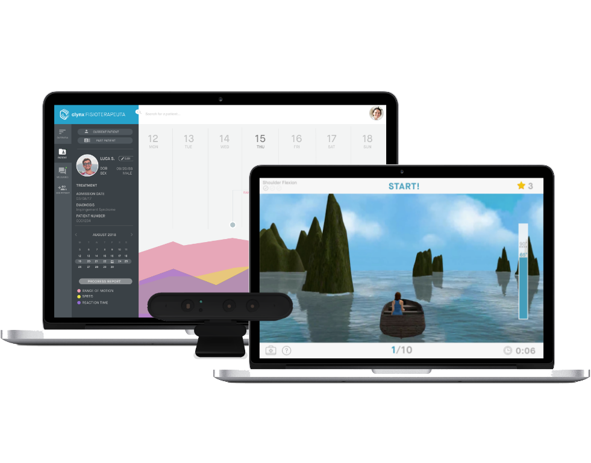

<html>
	<head>
		<title>Rebecca Yeap</title>
		<link rel="icon" href="assets/img/tagicon.png">
		<link rel="stylesheet" type="text/css" href="assets/css/bootstrap.min.css">
		<link rel="stylesheet" type="text/css" href="assets/css/clynx.css">
		<meta name="viewport" content="width=device-width, initial-scale=1.0">
	</head>
</html>
<body>
	<div id="navbar">
		<div id="labels-container">
		<div class="headerlabels" style="display: flex;">
				<div class="about">
					<a href="about.html">ABOUT</a> 
				</div>
				<div class="work">
					<a href="work.html">WORK</a> 
				</div>
				<div class="nonwork">
					<a href="nonwork.html">PLAY</a> 
				</div>
			</div>
		</div>
		<div>
			<!---->
		</div>
	</div>
	<div class= "container-fluid" id="about_block"> 
		<div class="row">
			<div class="col-md-6 offset-md-2">
				<div style="padding-top: 100px; margin-left: 50px">
					<h2>clynx</h2>
					<p>interaction design | 3-month timeline | July 2018</p>
				</div>
				<div class="row">
					<div class="col-md-6" style="padding-top: 20px;margin-left: 50px">
					<p>In the Summer of 2018, I co-founded a health-tech product with my friends of biomedical and software engineers (Joana Pinto, Henrique Carvalho, Gonçalo Chambel, João Ramiro) at the <a href="https://www.inacademy.eu/">European Innovation Academy</a>. Below, is a breakdown of the problem/solution fit and how it has informed my design process of the MVP, the web portal and a gamified exercise. 
					 </p>  
					<p><a href="https://clynx.io/">Clynx</a> competed at the <a href="https://www.inacademy.eu/">EIT Health InnoStars Awards 2018</a> and received 10K as one of the top 10 Health Startups in Europe. At the end of 2018, we began the beta testing phase which has informed my current iterations.</p>
					</div>
				</div>
				
			</div>
		</div>

		<div class="row">
			<div class="col-md-8 offset-md-2"> 
				
				
					<div id="player"> <iframe width="840" height="472.5" src="https://www.youtube.com/embed/-8Twypi1g98?rel=0" frameborder="0" allow="autoplay; encrypted-media" allowfullscreen></iframe></div>
			</div>
			
		</div>
	</div>
		
</body>
</html>